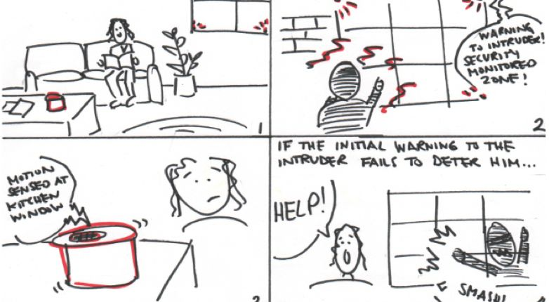

Introduction
Physical product design project built for class HCDE 518, User-centered Design taught by Jess Holbrook. Growler is a comprehensive personal home security system with a unique focus on deterring potential intruders before a home breach occurs.
Responsibility
I'm the UX Designer of the project to deliver user flow, persona, user research survey design, and prototype by Axure
Design Process
- User Research by 100+ survey responses and 7 interviews.
- Ideate with 30+ sketches and finalize to 2 ideas and storyboards.
- Build prototypes, low-fi paper prototype by cardboards and interactive prototype by axure, a box and an iPhone.
- Conduct usability tests by the prototypes and scenarios and do a role-play.
- Refine designs from the user feedback
- Document design specification


